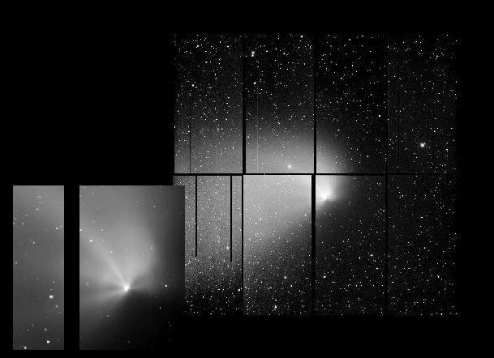

This image (larger GIF file)) of Comet Hale-Bopp was obtained on September 16, 1996 at the Canada-France-Hawaii Telescope on Mauna Kea , with the 8192^2 pixel CCD camera built by the Institute for Astronomy (Hawaii); the observers were Olivier Hainaut, Karen Meech and James Bauer.
The camera, which is the largest in the world, is a mosaic of 8 CCDs, each one having 2048x4096 pixels. The gaps between these detectors appears as a black grid. Some defects in some of the CCDs appear as black streaks. As a comparison, a typical large professional CCD has 2000 pixels (i.e., half of one of the individual chips), and amateur CCDs usually have less than 1000pix. This camera allow us to obtain images of a huge field without any loss of resolution: on the CFHT, the field of view is almost 1/2 x 1/2 degree (the full Moon would just fit in), i.e. about 10-40 times larger than what is obtained with typical CCD detectors.
This image is a 2min exposure through a VR filter (very broad-band, enclosing most of the visible light from green to red), except the central region (saturated on the 2min exposure), which was extracted from a 15sec image taken just after. On this image, N is up, E is left. At the time of the observations, the Sun was on the right side of the image (almost 2deg up from W). At least 6 dust jets are visible close to the nucleus (they have been slightly enhanced by dividing the image by a smooth cometary profile); they curve away from the Sun, as the solar wind drags the dust particles, to fade into the huge tail. Images obtained by S. Larson and his collaborators a few days before and after this frame show the same jets in exactly the same position, indicating that the comet nucleus did not rotate during this period; the period of rotation must be very long. M. Festou observed the jets spectroscopically about 2 weeks before this image was taken. His data show that the particle in the jets are moving toward us, which is what was expected: as the jets are emitted from the Sun-facing hemisphere, and the Earth is between the Sun and the comet, we see the jets pointing toward us. The comet was at 3.1 AU from the Sun, which means that the water ice constituting most of its nucleus is now receiving just enough heat from the Sun in order to sublimate, while during the past months, only other ices (like CO and CO2 ices, which require less heat to sublimate) were contributing to the comet's activity.
Olivier Hainaut
Fri Nov 29 12:55:58 1996
{kind=link}